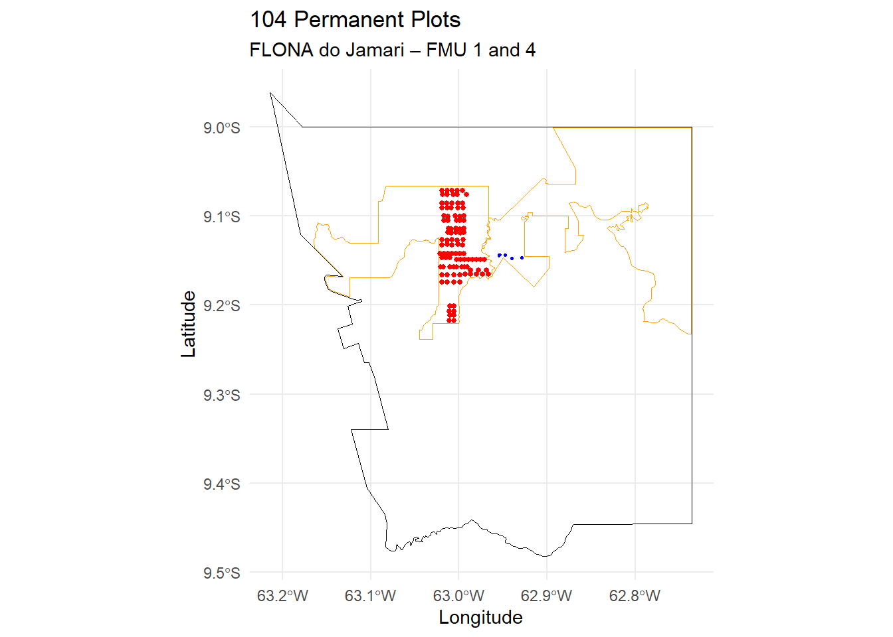
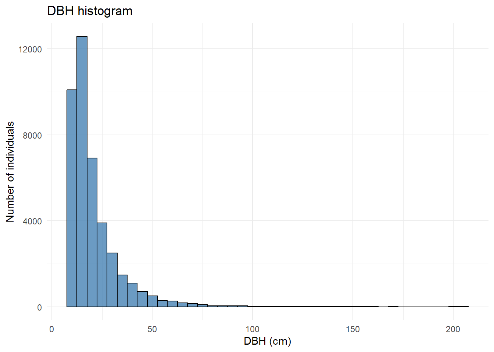

1 Preparation of Permament Plots data
1.1 Introduction
This script merges all Permanent Plot (PP) tables from the Jamari National Forest (Flona do Jamari) used in my PhD project. These PPs are located within Annual Production Units (APUs) that have been covered by at least three LiDAR flights.
The PP tables were provided by Madeflona. For each APU and each measurement year, there is a corresponding Excel (.xlsx) file. The files were organized into subdirectories following the structure:
./data/pps/tables/FMU_NAME/APU_NAME/xlxs files.
1.2 Setup
1.3 Permanent plots information
Permanent plots were installed and measured following guidelines from Natalino et al. (2005).
All PPs have 2,500 m2 (50 x 50 mts). Below you can see PPs distribution in the Flona do Jamari. Shapefiles of the PPs were provided by Madeflona. PPs shapefiles are in 31980 projection.
Code
flona_jamari <- st_read("data/pps/geo/flona_jamari.shp",
quiet = TRUE)
st_crs(flona_jamari) <- 4674
umfs <- st_read("data/pps/geo/umfs_RO.shp",
quiet = TRUE)
umfs <- umfs[2:3, ]
st_crs(umfs) <- 4674
pps_umf1 <- st_read("data/pps/geo/handheld_gps/JAM1_PP.shp",
quiet = TRUE)
pps_umf4 <- st_read("data/pps/geo/handheld_gps/JAM4_U15_PP.shp",
quiet = TRUE)
st_crs(pps_umf1) <- 31980
st_crs(pps_umf4) <- 31980
ggplot() +
geom_sf(data = flona_jamari,
fill = NA,
color = "black") +
geom_sf(data = umfs,
fill = NA,
color = "orange") +
geom_sf(data = pps_umf1,
color = "red",
size = 1) +
geom_sf(data = pps_umf4,
color = "blue",
size = 1) +
theme_minimal() +
labs(
title = paste0(nrow(pps_umf1) + nrow(pps_umf4),
" Permanent Plots"),
subtitle = "FLONA do Jamari – FMU 1 and 4",
x = "Longitude",
y = "Latitude"
)
The PPs tables contain several columns with information collected in the field. Below are the column headers and an example row.
Code
| p23_cdarea | p23_cdmedicao | p23_cdparcela | p23_cdsubparcela | p23_nrindividuo | p23_cdespecie | Especie | p23_cdcif | diametromm | p23_lgmudancapdm | p23_cdtratamento | p23_cdiluminacao |
|---|---|---|---|---|---|---|---|---|---|---|---|
| 6 | 2010 | 1 | 1 | 1 | 113 | Itaubarana [Ni ni] [00113] | 1 | 190 | NA | 5 | 2 |
The meaning of each column is described below. A complete description can be found in Natalino et al. (2005).
p23_cdarea = area code;
p23_cdmedicao = year of measurement;
p23_cdparcela = plot number;
p23_cdsubparcela = subplot number;
p23_nrindividuo = sequential number of individual measurement;
p23_cdespecie = unique code for species;
Especie = common name of the species;
p23_cdcif = see table below;
diametromm = DBH in mm;
p23_lgmudancapdm = only filled if there was a change in the trunk point of measurement;
p23_cdcif = tree status in the forest. see table below.
Code
| Column | Column.description | Code | Code.description |
|---|---|---|---|
| p23_cdcif | This variable describes the different states in which trees can be found in a forest. These states result from the tree's own growth or from changes caused by human activities or natural processes. The numerical codes used combine the health condition of the individual with the status of its stem. In the first measurement, only living individuals are considered. From the second measurement onward, all individuals must be recorded, including those that are dead or not found. | 1 | Standing live tree with an intact stem |
| 2 | Standing live tree without a crown, with a stem equal to or longer than 4.0 m | ||
| 3 | Standing live tree without a crown, with a stem shorter than 4.0 m | ||
| 4 | Fallen live tree | ||
| 5 | Tree dead from natural causes | ||
| 6 | Tree dead due to logging | ||
| 7 | Tree dead due to silvicultural treatment | ||
| 8 | Harvested tree (logging stump) | ||
| 9 | Tree not found | ||
| 10 | Tree dead due to unknown anthopogenic causes | ||
| 11 | Leaning (supported) tree due to natural causes: a tree whose stem was tilted by natural damage and is supported by neighboring trees. | ||
| 12 | Leaning (supported) tree due to logging: a tree whose stem was tilted as a result of logging activities and is supported by neighboring trees. | ||
| 13 | Inclined tree due to natural causes: a tree leaning at an angle greater than 45 degrees, caused by the natural fall of another tree or by the search for better light conditions. | ||
| 14 | Inclined tree due to logging: a tree leaning at an angle greater than 45 degrees as a result of logging activities. | ||
| 15 | Bent (arched) tree due to natural causes: a tree bent due to the presence of lianas or the natural fall of another tree. | ||
| 16 | Bent (arched) tree due to logging: a tree bent as a result of logging activities. |
p23_cdtratamento = silvicultural status. see table below.
Code
| Column | Column.description | Code | Code.description |
|---|---|---|---|
| p23_cdtratamento | This field identifies the condition of each tree with respect to the silvicultural actions applied in the forest. | 1 | Tree with harvesting potential: the tree must have a straight stem, free of defects along its entire length, or be suitable for producing a log of at least 4 m in length. This code should be used even in areas where timber harvesting is not intended (control areas or permanent preservation areas), as it serves as an indicator of the forest's productive capacity. |
| 2 | Girdled tree: a tree from which a ring of bark has been removed as a silvicultural treatment, with the purpose of causing its devitalization. | ||
| 3 | Girdled tree treated with chemical product: a tree from which a ring of bark has been removed and that has received a chemical product as a silvicultural treatment, with the purpose of causing its devitalization. | ||
| 4 | Tree benefiting from silvicultural treatment: a tree that has benefited from silvicultural treatments such as thinning or liana cutting, in order to release its crown and increase light availability. | ||
| 5 | Tree neither reserved nor treated: a tree that was not selected for harvesting, did not benefit from silvicultural treatment, was not girdled, and did not receive chemical treatment. This category includes trees of species that do not reach large size or that, even if commercial or potentially commercial, have severely damaged, rotten, or highly deformed stems. | ||
| 6 | No silvicultural status: harvested tree; tree dead from any cause; tree not found. |
p23_cdiluminacao = crown sun exposure. see table below.
Code
| Column | Column.description | Code | Code.description |
|---|---|---|---|
| p23_cdiluminacao | The crown light exposure variable indicates the level of light exposure of the tree crown, as well as the degree of competition with the crowns of neighboring trees. This variable is important because it represents one of the factors that significantly influence growth. In the assessment of crown light exposure, only living, standing trees (whether complete or broken) with a diameter of approximately 10 cm or more are considered. | 1 | Emergent crown or fully exposed to light |
| 2 | Partially illuminated crown, i.e., partially shaded by neighboring tree crowns | ||
| 3 | Completely shaded crown by neighboring tree crowns, receiving only lateral or diffuse light | ||
| 4 | Not assessed (tree without a crown) |
1.4 Standardizing and merging all tables in one
We will standardize the PPs tables, add some extra columns and merge all tables in only one. First, let’s read all tables.
We have xlsx and xls files. We will do a loop to:
Use
read.excelto read the file;Retrieve the APU and FMU information from the directories and add corresponding columns;
Add a DBH column in cm (by dividing
diametrommby ten);Add a column with the species’ common name (retrieved in the
Especiecolumn);Add separate columns for the epithet and genus extracted from the scientific name (retrieved in the
Especiecolumn);Add information about exploitation in the APU (year, total area, exploited area, cutting intensity, authorized volume);
Add a unique individual numeric code column in the final table.
Code
tabelao.pps <- data.frame()
for(i in 1:length(lista.pps)) {
upa.table <- read_excel(lista.pps[i])
upa.table$UPA <- basename(dirname(lista.pps[i]))
upa.table$UMF <- basename(dirname(dirname(lista.pps[i])))
upa.table$diametrocm <- upa.table$diametromm / 10
# Cria uma coluna com nome popular
upa.table$nome_pop <- str_extract(upa.table$Especie,
".+?(?=\\s)")
# Separa o nome científico
upa.table <- upa.table %>%
mutate(Especie = str_extract(upa.table$Especie,
"(?<=\\[).+?(?=\\])")) %>%
tidyr::separate(`Especie`,
c("genero",
"epiteto"),
" ")
tabelao.pps <<- rbind(tabelao.pps,
upa.table)
}
tabelao.pps$cod_upa <- paste(tabelao.pps$UMF,
tabelao.pps$UPA,
sep="_")
concessions <- read_excel("data/pps/tables/UPAs_concessoes_planilha.xlsx")
# Mudar para código da UMF para algarismos romanos
concessions$UMF <- as.roman(concessions$UMF)
concessions <- concessions %>%
filter(Imóvel == "Flona do Jamari") %>%
mutate("cod_upa" = paste("UMF",
UMF,
"UPA",
UPA,
sep = "_"))
tabelao.pps <- tabelao.pps %>%
left_join(concessions %>%
select(cod_upa,
Ano,
`Área Tota`,
`Área Efet`,
Intensidad,
`Volume Tor`),
by = "cod_upa") %>%
rename(exploit_year = Ano,
apu_area_ha = `Área Tota`,
authorized_area_ha = `Área Efet`,
cutting_intens_m3_ha = Intensidad,
authorized_vol_m3 = `Volume Tor`)
tabelao.pps$cod_indiv <- paste(tabelao.pps$UMF,
tabelao.pps$UPA,
tabelao.pps$p23_cdparcela,
tabelao.pps$p23_cdsubparcela,
tabelao.pps$p23_nrindividuo,
sep="_")Correct scientific names
Code
###########################################################################################
#Corrige o nome científico
###########################################################################################
###########################################################################################
# Clean scientific names:
# 1. Remove "cf."
# 2. Remove anything under parentheses.
tabelao.pps$nome_corrigido <- trimws(
gsub("\\s*cf\\.\\s*|\\([^)]*\\)",
" ",
paste(tabelao.pps$genero,
tabelao.pps$epiteto),
ignore.case = T
)
)
# Função para limpar caracteres do excel
# get_binomial não estava funcionando para "Chrysophyllum lucentifolium var. pachycarpa"
limpa_nome <- function(x) {
x <- as.character(x)
x <- iconv(x, from = "", to = "UTF-8")
x <- gsub("\u00A0", " ", x) # NBSP
x <- gsub("[[:space:]]+", " ", x) # múltiplos espaços
trimws(x)
}
# Get the binomial name (epithet + genus)
tabelao.pps$nome_corrigido <- get_binomial(limpa_nome(tabelao.pps$nome_corrigido),
include_subspecies = FALSE,
include_variety = FALSE)
#sub("^((\\S+)\\s+(\\S+)).*$", "\\1", "Chrysophyllum lucentifolium var. pachycarpa")
tabelao.pps$nome_corrigido <- sub(
"^((\\S+)\\s+(\\S+)).*$",
"\\1",
gsub("[[:space:]]+", " ",
trimws(as.character(tabelao.pps$nome_corrigido)))
)
if (!file.exists("data/taxo/pps_florabr_taxo.rds")) {
# Check names with florabr
floraBR <- load_florabr("C:/Gustavo/Doutorado/Dados/Taxo_databases/florabr")
res_florabr <- check_names(data = floraBR,
max_distance = 0.1,
species = tabelao.pps$nome_corrigido,
parallel = T,
ncores = 12,
progress_bar = T
)
# Resolve some species mannualy
write.csv(res_florabr$input_name[res_florabr$Spelling == "Not_found"],
file = "data/taxo/manually_corrected_species_pps.csv")
# Pouteria pachycarpa
# https://lpf.florestal.gov.br/pt-br/?option=com_madeirasbrasileiras&view=especieestudada&especieestudadaid=206
# res_florabr$acceptedName[res_florabr$input_name == "Chrysophyllum lucentifolium var. pachycarpa"] <- "Chrysophyllum lucentifolium"
# não funciona por causa de caracteres do excel
# Ni
# Non identified species
res_florabr$acceptedName[res_florabr$input_name == "Ni"] <- "NI"
res_florabr$acceptedName[res_florabr$input_name == "Ni ni"] <- "NI"
res_florabr$acceptedName[res_florabr$input_name == "Ni sp."] <- "NI"
saveRDS(res_florabr, "data/taxo/pps_florabr_taxo.rds")
} else {
res_florabr <- readRDS("data/taxo/pps_florabr_taxo.rds")
}
res_florabr_unique <- res_florabr %>%
distinct(input_name, .keep_all = TRUE)
tabelao.pps <- tabelao.pps %>%
left_join(
res_florabr_unique %>%
select(input_name, acceptedName),
by = c("nome_corrigido" = "input_name")
) %>%
mutate(
nome_florabr = case_when(
# keep name when second word is "sp.", since florabr assign a random name in these cases
str_detect(nome_corrigido, "^\\S+\\s+sp\\.$") ~ nome_corrigido,
TRUE ~ acceptedName
)
) %>%
select(-acceptedName)
# Get corrected Genus and Epithet
tabelao.pps$genero <- sub("^([^ ]+).*$", "\\1", tabelao.pps$nome_florabr)
tabelao.pps$epiteto <- sub("^\\S+\\s+(\\S+).*$", "\\1", tabelao.pps$nome_florabr)
write.csv(tabelao.pps,
"output/pps/tabelao_pps.csv")
sp <- read.csv("data/taxo/manually_corrected_species_pps.csv",
stringsAsFactors = FALSE)
text <- {
species <- sp$x
species <- species[!is.na(species)]
if (length(species) > 0) {
paste(
"Species corrected manually (n =",
length(species),
"):",
paste(species, collapse = ", ")
)
} else {
"No species required manual correction."
}
}Species corrected manually (n = 1 ): Ni sp.
Now we have all PPs data merged in one main table (tabelao.pps). Let’s take a look at the data.
Code
| UMF | UPA | Number of measurements | Years |
|---|---|---|---|
| UMF_I | UPA_1 | 5 | 2010, 2013, 2016, 2018, 2021 |
| UMF_I | UPA_10 | 3 | 2015, 2017, 2023 |
| UMF_I | UPA_13 | 2 | 2020, 2022 |
| UMF_I | UPA_2 | 4 | 2011, 2013, 2016, 2021 |
| UMF_I | UPA_3 | 4 | 2012, 2013, 2017, 2023 |
| UMF_I | UPA_4 | 4 | 2012, 2014, 2018, 2023 |
| UMF_I | UPA_5 | 3 | 2013, 2015, 2019 |
| UMF_I | UPA_6 | 3 | 2014, 2016, 2020 |
| UMF_I | UPA_7 | 2 | 2019, 2020 |
| UMF_I | UPA_8 | 2 | 2017, 2019 |
| UMF_I | UPA_9 | 2 | 2017, 2019 |
| UMF_IV | UPA_15 | 2 | 2020, 2022 |
Code
sp_indiv <- tabelao.pps %>%
group_by(UMF,
UPA) %>%
summarise("Number of species" = n_distinct(nome_florabr),
"Number of individuals" = n(),
.groups = "drop")
sp_indiv_total <- tabelao.pps %>%
summarise(
UMF = "Total",
UPA = "-",
"Number of species" = n_distinct(nome_florabr),
"Number of individuals" = n()
)
tabelao_final <- bind_rows(sp_indiv,
sp_indiv_total)
tabelao_final %>%
kbl(caption = "Number of species and individuals") %>%
kable_classic(full_width = FALSE)| UMF | UPA | Number of species | Number of individuals |
|---|---|---|---|
| UMF_I | UPA_1 | 79 | 5708 |
| UMF_I | UPA_10 | 66 | 2894 |
| UMF_I | UPA_13 | 65 | 2194 |
| UMF_I | UPA_2 | 73 | 5400 |
| UMF_I | UPA_3 | 73 | 5327 |
| UMF_I | UPA_4 | 77 | 5738 |
| UMF_I | UPA_5 | 77 | 3680 |
| UMF_I | UPA_6 | 79 | 3680 |
| UMF_I | UPA_7 | 70 | 1884 |
| UMF_I | UPA_8 | 69 | 1845 |
| UMF_I | UPA_9 | 69 | 1845 |
| UMF_IV | UPA_15 | 47 | 895 |
| Total | - | 104 | 41090 |
Code
